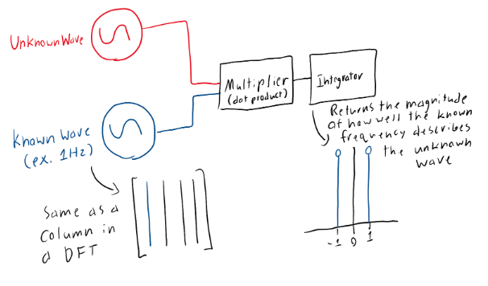

Description of the fourier transform
Through our final project, we attempted to recreate a discrete fourier transformation (DFT) within an analog circuit. This is possible because a DFT fits a set of discrete waves spanning a range of frequencies to a dataset. The better the wave described by the dataset is recreated by a discrete wave, the higher proportion of the data can be described by said frequency.
Fundamentally, the dot product of each point in our dataset is being taken against the discrete frequency and integrating these dot products over time should produce the magnitude at which the discrete frequency describes the data. This works because the dot product produces a magnitude of how well two vectors align and then integrating these magnitudes provides us an overall value for said frequency.
With these fundamentals in mind, we believed that a DFT could be achieved through an analog circuit. Our basic idea was that combining a wave multiplier and then integrator would yield the same outcome with the multiplier performing the dot product between the unknown wave and a known frequency and then the integrator returning the overall magnitude of how well the known frequency describes the unknown wave.
In this approach, the known wave is analogous to a column in a DFT matrix and the integrator produces the magnitude of said frequency, so we can do frequency domain analysis of the unknown wave. With this, we could cycle through a large range of frequencies in order to build an accurate picture of what combination of known frequencies forms the unknown wave.